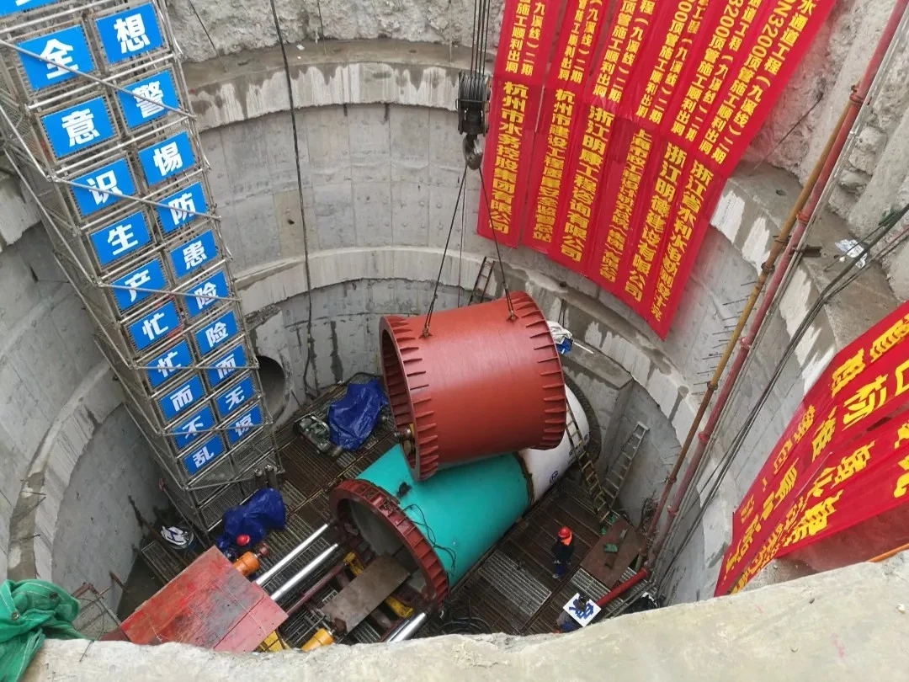
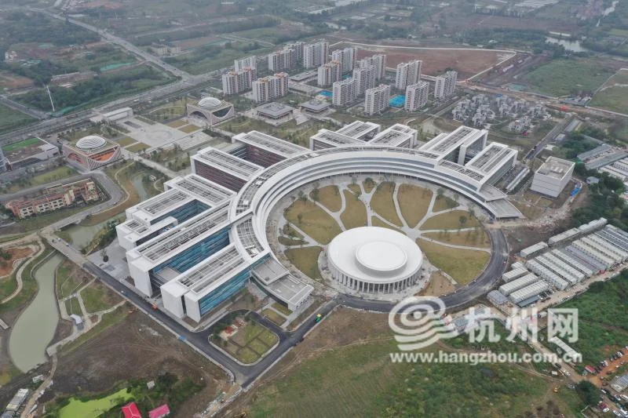
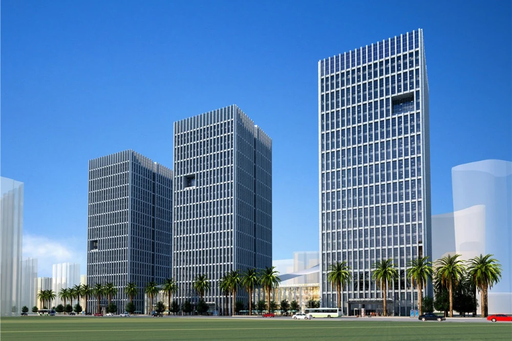
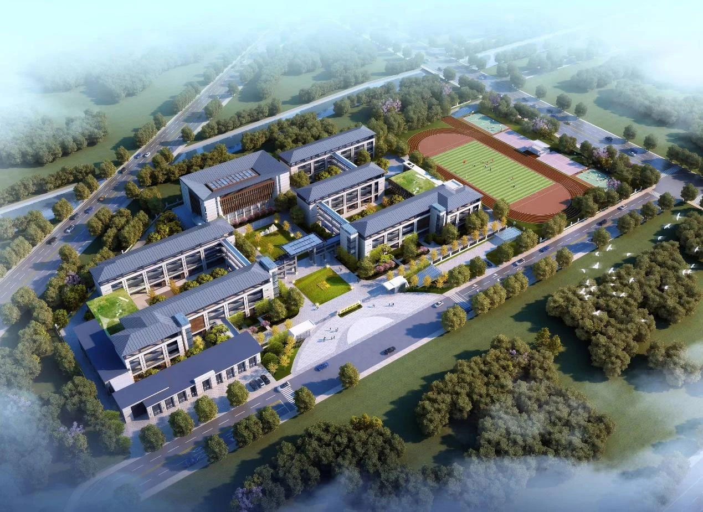
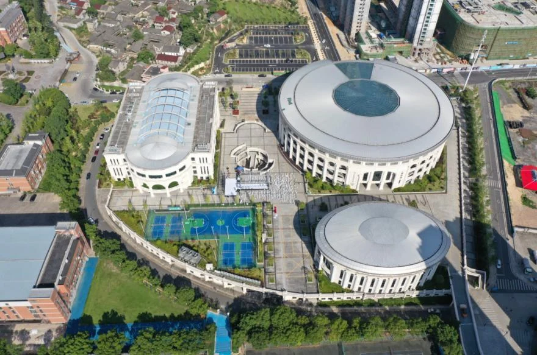

换监理合作单位：项目、人员、款项与档案怎样交接
区分后续业务合作与在建项目交接，先盘点合同、款项、人员和档案，再安排衔接时间与责任分工。
阅读专题展示全国工程监理企业推荐榜、资料评分、资质记录与代表工程，帮助建设单位、项目业主和工程合作方查找企业、比较合作方向。
305 家企业均有评分331 项工程记录10 分制下载企业与评分数据











杭州市本级海塘安澜工程、杭州市第二水源输水通道（江南线）山岭段
四川省中江县凯江系统治理工程监理一标段、海南省临高县抱美一中型水库改扩建项目
临海市北固山截洪工程（EPC工程总承包）
嘉兴市域外配水工程（杭州方向）
秦望过江通道、下沙路与12号路提升改造及附属配套工程PPP项目
区分后续业务合作与在建项目交接，先盘点合同、款项、人员和档案，再安排衔接时间与责任分工。
阅读专题按接洽、资料互换、方案确认、协议签订和项目导入五步推进，附初次沟通材料清单。
从项目报备到结项，整理十个常见办理节点，帮助团队与总部确认材料和办理时间。
按服务范围、交付成果、人员配置和费用计算四项，梳理全过程工程咨询合作方案。
面向会展、医院、院校与TOD项目，从相近技术条件、专业团队、服务周期和界面管理比较合作方案。